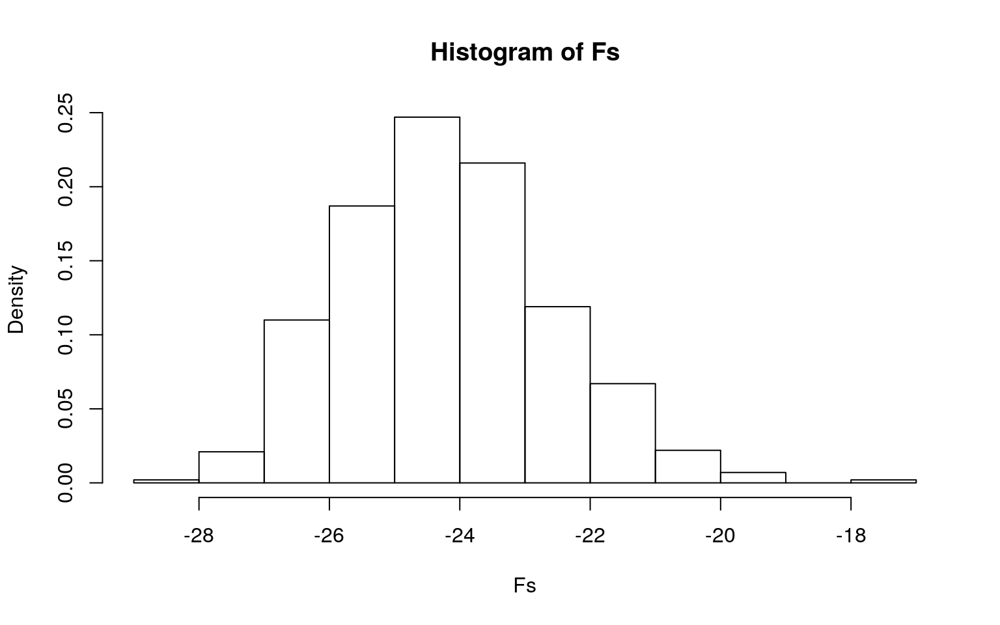
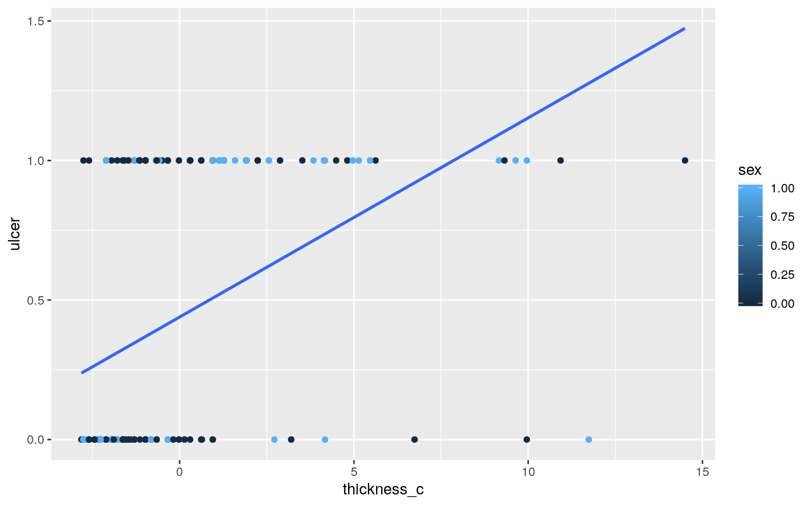
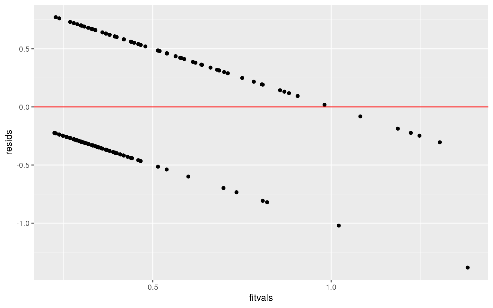
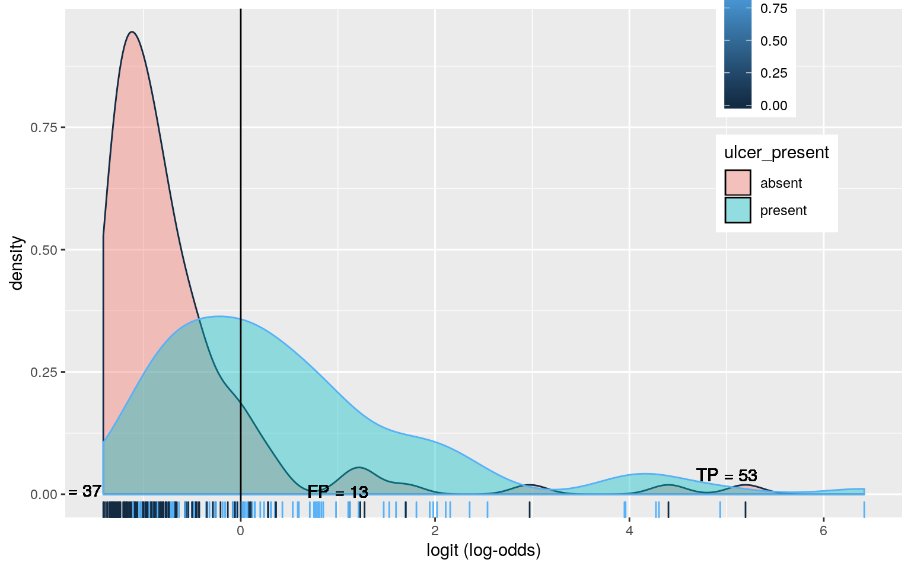
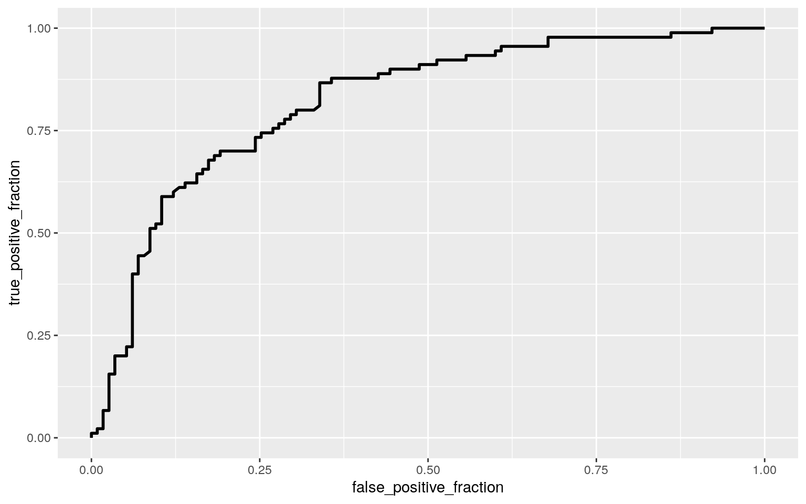

Since it’s already summer in Texas I thought a good dataset to look at would be the skin’s worse enemy, melanomas. The dataset I chose was “melanoma” in the R package boot. It contains 205 observations with prognostic variables after patients had a complete removal of their tumors. The variables measure the following: “time”- survival time in days post-op “status”-end of study livelihood staus (1-dead,2-alive,3-death unrelated) “sex”-patients sex (1=M / 0=F) “age”- age at the time of surgery “thickness”- tumor thickness (mm) “ulcer”- ulceration indications (1=present,0=absent) Addionally the project asks for a categorical variable with 2-5 groupings so I took the age and seperated into the quarters/stages of life (0-100 broken into four quarters) and added the variable in the data frame.
#Dataset
library(tidyverse)
library(boot)
data(melanoma)
melanoma<-as.data.frame(melanoma)
attach(melanoma)
quarter<-cut(age ,breaks = c(0,25,50,75,100), labels = c("first","second","third","fourth"), right=FALSE)
melanoma$quarter<-quarterI ran a MANOVA to test if time or tumor thickness differed by life stage (“quarter”) and it came back with signifant results (p-value= 0.00469). I then did a univariate ANOVA from my MANOVA object to find that the survival time in days, after the tumor removal operation, differs by life stage.
There was a total of 6 tests done (1 MANOVA, 2 ANOVAs, 3 post hoc t tests on significant data) and a calculated type I error equating to 0.265, roughly 27%. I then conducted a bonferonni correction to get a cut off of 0.008.
Assumptions for MANOVA were not met because the data rejected the null hypothesis that the DVs (time, thickness) are equal. For the ANOVA, since the variable ‘time’ was significant, the null hypothesis was also rejected of equal groupings. Then running the t test comparing time against different quarters, significant difference was found between the following quarters: - first quarter vs. fourth quarter - second quarter vs. third quarter - second quarter vs. fourth quarter
#Manova code
man1<-manova(cbind(time,thickness)~quarter)
summary(man1)## Df Pillai approx F num Df den Df Pr(>F)
## quarter 3 0.090497 3.1753 6 402 0.00469 **
## Residuals 201
## ---
## Signif. codes: 0 '***' 0.001 '**' 0.01 '*' 0.05 '.' 0.1 ' ' 1summary.aov(man1)## Response time :
## Df Sum Sq Mean Sq F value Pr(>F)
## quarter 3 20639724 6879908 5.8546 0.0007481 ***
## Residuals 201 236200385 1175126
## ---
## Signif. codes: 0 '***' 0.001 '**' 0.01 '*' 0.05 '.' 0.1 ' ' 1
##
## Response thickness :
## Df Sum Sq Mean Sq F value Pr(>F)
## quarter 3 46.83 15.611 1.8035 0.1478
## Residuals 201 1739.85 8.656pairwise.t.test(time,quarter, p.adj="none")##
## Pairwise comparisons using t tests with pooled SD
##
## data: time and quarter
##
## first second third
## second 0.62240 - -
## third 0.06170 0.00676 -
## fourth 0.00361 0.00055 0.04091
##
## P value adjustment method: none1-.95^6## [1] 0.2649081.05/6## [1] 0.008333333Much like the MANOVA, using the PERMANOVA randomization test, it confirms my findings in the last chunk of code. Once again, we reject the null hypothesis of equal euclidean distances per group.
#Randomization test code
library(vegan)
dists<-melanoma%>%select(time, thickness)%>%dist()
adonis(dists~quarter,data=melanoma)##
## Call:
## adonis(formula = dists ~ quarter, data = melanoma)
##
## Permutation: free
## Number of permutations: 999
##
## Terms added sequentially (first to last)
##
## Df SumsOfSqs MeanSqs F.Model R2 Pr(>F)
## quarter 3 20639771 6879924 5.8546 0.08036 0.001 ***
## Residuals 201 236202125 1175135 0.91964
## Total 204 256841895 1.00000
## ---
## Signif. codes: 0 '***' 0.001 '**' 0.01 '*' 0.05 '.' 0.1 ' ' 1#plot
F_obs<-5.8546
SST<-sum(dists^2)/205
Fs<-replicate(1000,{
new<-melanoma%>%mutate(quarter=sample(quarter))
SSW<-new%>%group_by(quarter)%>%select(time,thickness)%>%do(d=dist(.[2:3], "euclidean"))%>%ungroup()%>%summarize(sum(d[[1]]^2)/51.25+sum(d[[2]]^2)/51.25+sum(d[[3]]^2)/51.25 + sum(d[[4]]^2)/51.25)%>%pull
((SST-SSW)/3)/(SSW/201)
})
{hist(Fs,prob=T);abline(v=F_obs, col="red", add=T)}
mean(Fs>F_obs)## [1] 0The coefficients after mean centering the data lead to the creation of this following model: ulcer= 0.400+0.062(thickness_c)+0.092(sex)+0.014(thickness_c:sex). The proportion of the variation in the outcome of my model is the adjusted R squared value from the mean centered fitted model of 0.178.
#Linear regression code
library(sandwich)
library(lmtest)
fit<-lm(ulcer~ thickness*sex, data=melanoma)
summary(fit)##
## Call:
## lm(formula = ulcer ~ thickness * sex, data = melanoma)
##
## Residuals:
## Min 1Q Median 3Q Max
## -1.3828 -0.3196 -0.2578 0.4611 0.7721
##
## Coefficients:
## Estimate Std. Error t value Pr(>|t|)
## (Intercept) 0.21788 0.05423 4.018 8.30e-05 ***
## thickness 0.06239 0.01465 4.260 3.14e-05 ***
## sex 0.05236 0.09451 0.554 0.580
## thickness:sex 0.01350 0.02183 0.619 0.537
## ---
## Signif. codes: 0 '***' 0.001 '**' 0.01 '*' 0.05 '.' 0.1 ' ' 1
##
## Residual standard error: 0.4511 on 201 degrees of freedom
## Multiple R-squared: 0.19, Adjusted R-squared: 0.1779
## F-statistic: 15.71 on 3 and 201 DF, p-value: 3.222e-09coef(fit)## (Intercept) thickness sex thickness:sex
## 0.21788331 0.06239172 0.05236220 0.01350075mean(thickness)## [1] 2.919854data.frame(thickness_c=melanoma$thickness-mean(melanoma$thickness))## thickness_c
## 1 3.84014634
## 2 -2.26985366
## 3 -1.57985366
## 4 -0.01985366
## 5 9.16014634
## 6 1.92014634
## 7 2.24014634
## 8 0.30014634
## 9 9.96014634
## 10 4.49014634
## 11 1.27014634
## 12 -2.75985366
## 13 0.95014634
## 14 1.92014634
## 15 -0.49985366
## 16 9.64014634
## 17 2.88014634
## 18 4.14014634
## 19 2.56014634
## 20 4.81014634
## 21 10.93014634
## 22 -0.57985366
## 23 1.27014634
## 24 1.12014634
## 25 1.92014634
## 26 -2.59985366
## 27 5.62014634
## 28 -0.33985366
## 29 0.64014634
## 30 0.62014634
## 31 -1.94985366
## 32 1.91014634
## 33 -1.29985366
## 34 3.52014634
## 35 11.74014634
## 36 -0.33985366
## 37 0.95014634
## 38 0.62014634
## 39 -1.57985366
## 40 -0.67985366
## 41 0.95014634
## 42 0.62014634
## 43 14.50014634
## 44 -1.62985366
## 45 0.30014634
## 46 -1.62985366
## 47 1.59014634
## 48 5.46014634
## 49 -0.97985366
## 50 -2.75985366
## 51 -0.33985366
## 52 -1.62985366
## 53 -2.75985366
## 54 -1.29985366
## 55 -1.62985366
## 56 -0.81985366
## 57 -2.59985366
## 58 -2.10985366
## 59 -1.78985366
## 60 2.24014634
## 61 -1.29985366
## 62 -1.54985366
## 63 -2.67985366
## 64 -2.10985366
## 65 -1.62985366
## 66 -1.62985366
## 67 -1.94985366
## 68 -1.78985366
## 69 2.88014634
## 70 -1.62985366
## 71 -2.43985366
## 72 -1.29985366
## 73 -0.65985366
## 74 -2.33985366
## 75 -1.94985366
## 76 -0.33985366
## 77 -2.10985366
## 78 0.62014634
## 79 -1.94985366
## 80 -1.13985366
## 81 -0.97985366
## 82 -1.62985366
## 83 0.30014634
## 84 -1.38985366
## 85 -1.62985366
## 86 -1.29985366
## 87 -1.29985366
## 88 -2.59985366
## 89 1.92014634
## 90 -1.62985366
## 91 -1.94985366
## 92 0.14014634
## 93 0.62014634
## 94 -1.29985366
## 95 -0.33985366
## 96 -0.97985366
## 97 -2.10985366
## 98 4.81014634
## 99 -1.94985366
## 100 9.96014634
## 101 -0.33985366
## 102 1.17014634
## 103 -2.27985366
## 104 -1.94985366
## 105 0.30014634
## 106 -1.29985366
## 107 0.95014634
## 108 -2.59985366
## 109 -2.59985366
## 110 0.30014634
## 111 -0.65985366
## 112 0.14014634
## 113 -0.33985366
## 114 -2.26985366
## 115 -1.78985366
## 116 -2.10985366
## 117 -1.94985366
## 118 -1.15985366
## 119 -0.97985366
## 120 -2.26985366
## 121 -1.94985366
## 122 2.72014634
## 123 6.74014634
## 124 -2.81985366
## 125 2.56014634
## 126 -0.65985366
## 127 1.91014634
## 128 -1.94985366
## 129 -1.94985366
## 130 2.24014634
## 131 -2.10985366
## 132 -0.01985366
## 133 0.95014634
## 134 -0.97985366
## 135 -2.75985366
## 136 -2.27985366
## 137 -0.65985366
## 138 -1.46985366
## 139 1.90014634
## 140 -1.62985366
## 141 4.97014634
## 142 -2.10985366
## 143 0.62014634
## 144 -1.62985366
## 145 -2.27985366
## 146 0.30014634
## 147 -1.46985366
## 148 -2.43985366
## 149 -0.97985366
## 150 -2.75985366
## 151 -2.75985366
## 152 -1.62985366
## 153 -0.97985366
## 154 0.62014634
## 155 -2.10985366
## 156 -2.26985366
## 157 4.17014634
## 158 -2.75985366
## 159 -1.29985366
## 160 -1.29985366
## 161 -1.62985366
## 162 3.20014634
## 163 -2.43985366
## 164 -2.27985366
## 165 0.30014634
## 166 -0.97985366
## 167 -0.33985366
## 168 -0.33985366
## 169 -2.10985366
## 170 -2.10985366
## 171 0.30014634
## 172 -2.59985366
## 173 0.30014634
## 174 -0.17985366
## 175 1.92014634
## 176 -1.29985366
## 177 -2.26985366
## 178 -1.46985366
## 179 -2.26985366
## 180 -1.62985366
## 181 -1.29985366
## 182 0.62014634
## 183 0.30014634
## 184 -2.26985366
## 185 -1.88985366
## 186 4.17014634
## 187 -1.62985366
## 188 -2.26985366
## 189 -1.13985366
## 190 9.32014634
## 191 5.14014634
## 192 -2.10985366
## 193 -0.81985366
## 194 0.95014634
## 195 -2.26985366
## 196 -0.97985366
## 197 -2.26985366
## 198 -0.81985366
## 199 -0.97985366
## 200 -1.78985366
## 201 4.14014634
## 202 3.20014634
## 203 -2.43985366
## 204 -0.65985366
## 205 -0.01985366melanoma$thickness_c<-melanoma$thickness-mean(melanoma$thickness)
fit1<-lm(ulcer~thickness_c*sex, data=melanoma)
summary(fit1)##
## Call:
## lm(formula = ulcer ~ thickness_c * sex, data = melanoma)
##
## Residuals:
## Min 1Q Median 3Q Max
## -1.3828 -0.3196 -0.2578 0.4611 0.7721
##
## Coefficients:
## Estimate Std. Error t value Pr(>|t|)
## (Intercept) 0.40006 0.04068 9.833 < 2e-16 ***
## thickness_c 0.06239 0.01465 4.260 3.14e-05 ***
## sex 0.09178 0.06600 1.391 0.166
## thickness_c:sex 0.01350 0.02183 0.619 0.537
## ---
## Signif. codes: 0 '***' 0.001 '**' 0.01 '*' 0.05 '.' 0.1 ' ' 1
##
## Residual standard error: 0.4511 on 201 degrees of freedom
## Multiple R-squared: 0.19, Adjusted R-squared: 0.1779
## F-statistic: 15.71 on 3 and 201 DF, p-value: 3.222e-09qplot(x=thickness_c, y=ulcer, color= sex, data= melanoma)+
stat_smooth(method = "lm", se= FALSE, fullrange = TRUE)
resids<-fit1$residuals
fitvals<-fit1$fitted.values
ggplot()+geom_point(aes(fitvals,resids))+geom_hline(yintercept = 0, col="red")
bptest(fit1)##
## studentized Breusch-Pagan test
##
## data: fit1
## BP = 10.826, df = 3, p-value = 0.0127ks.test(resids, "pnorm", sd=sd(resids))##
## One-sample Kolmogorov-Smirnov test
##
## data: resids
## D = 0.26674, p-value = 4.282e-13
## alternative hypothesis: two-sidedcoeftest(fit1, vcov. = vcovHC(fit1))[,1:2]## Estimate Std. Error
## (Intercept) 0.40005801 0.04312965
## thickness_c 0.06239172 0.01748523
## sex 0.09178241 0.06542109
## thickness_c:sex 0.01350075 0.03141322#Bootstrapped SE, CIs Code
boot_dat<-sample_frac(melanoma,replace = T)
samp_distn<-replicate(5000, {
boot_dat<-sample_frac(melanoma, replace= T)
fit<-lm(ulcer~thickness_c*sex,data=melanoma)
coef(fit)
})
samp_distn%>%t%>%as.data.frame%>%gather%>%group_by(key)%>%summarize(lower=quantile(value,.025),upper=quantile(value,.975))## # A tibble: 4 x 3
## key lower upper
## <chr> <dbl> <dbl>
## 1 (Intercept) 0.400 0.400
## 2 sex 0.0918 0.0918
## 3 thickness_c 0.0624 0.0624
## 4 thickness_c:sex 0.0135 0.0135The log(odds) model from the coefficients looks as follows:log(odds)= -1.708+0.448(thickness)+0.0048(age) Holding age constant, going up one unit of tumor thickness increases the logit score by 0.448.The accuracy rate is 0.7560976. The TPR or the probability of detecting ulceration correctly is 53/90=0.5888889. The TNR rate is 102/115= 0.8869565. The PPV rate is 53/66= 0.8030303. For the calculated AUC the value is 0.820, making it a good enough model. After doing a CV, looking the average out of sample Accuracy, Sensitivity, and Recall, the model looks a slightly worse out of the original sample.
#Logistic Regression Code
fit2<-glm(ulcer~thickness + age, data= melanoma, family = "binomial")
coeftest(fit2)##
## z test of coefficients:
##
## Estimate Std. Error z value Pr(>|z|)
## (Intercept) -1.7082538 0.5445886 -3.1368 0.001708 **
## thickness 0.4482084 0.0878074 5.1045 3.318e-07 ***
## age 0.0048853 0.0096873 0.5043 0.614051
## ---
## Signif. codes: 0 '***' 0.001 '**' 0.01 '*' 0.05 '.' 0.1 ' ' 1coef(fit2)%>%round(5)%>%data.frame## .
## (Intercept) -1.70825
## thickness 0.44821
## age 0.00489probs<- predict(fit2,type="response")
table(predict=as.numeric(probs>.5), truth=melanoma$ulcer)%>%addmargins## truth
## predict 0 1 Sum
## 0 102 37 139
## 1 13 53 66
## Sum 115 90 205melanoma$logit<-predict(fit2,type="link")
(102+53)/205## [1] 0.756097653/90## [1] 0.5888889102/115## [1] 0.886956553/66## [1] 0.8030303data<-melanoma%>%
mutate(ulcer_present= case_when(
ulcer==1 ~ "present", ulcer==0 ~ "absent"))
melanoma<-data
melanoma%>%ggplot()+geom_density(aes(logit,color=ulcer,fill=ulcer_present), alpha=.4)+
theme(legend.position=c(.85,.85))+geom_vline(xintercept=0)+xlab("logit (log-odds)")+
geom_rug(aes(logit,color=ulcer))+
geom_text(x=-5,y=.07,label="TN = 102")+
geom_text(x=-1.75,y=.008,label="FN = 37")+
geom_text(x=1,y=.006,label="FP = 13")+
geom_text(x=5,y=.04,label="TP = 53")
#ROC and AUC
library(plotROC)
ROCplot<-ggplot(melanoma)+geom_roc(aes(d=ulcer_present,m=probs), n.cuts=0)
ROCplot
calc_auc(ROCplot)## PANEL group AUC
## 1 1 -1 0.8201449#extra
class_diag <- function(probs,truth){
#CONFUSION MATRIX: CALCULATE ACCURACY, TPR, TNR, PPV
tab<-table(factor(probs>.5,levels=c("FALSE","TRUE")),truth)
acc=sum(diag(tab))/sum(tab)
sens=tab[2,2]/colSums(tab)[2]
spec=tab[1,1]/colSums(tab)[1]
ppv=tab[2,2]/rowSums(tab)[2]
if(is.numeric(truth)==FALSE & is.logical(truth)==FALSE) truth<-as.numeric(truth)-1
#CALCULATE EXACT AUC
ord<-order(probs, decreasing=TRUE)
probs <- probs[ord]; truth <- truth[ord]
TPR=cumsum(truth)/max(1,sum(truth))
FPR=cumsum(!truth)/max(1,sum(!truth))
dup<-c(probs[-1]>=probs[-length(probs)], FALSE)
TPR<-c(0,TPR[!dup],1); FPR<-c(0,FPR[!dup],1)
n <- length(TPR)
auc<- sum( ((TPR[-1]+TPR[-n])/2) * (FPR[-1]-FPR[-n]) )
data.frame(acc,sens,spec,ppv,auc)
}
class_diag(probs,ulcer)## acc sens spec ppv auc
## 1 0.7560976 0.5888889 0.8869565 0.8030303 0.8201449library(pROC)
auc(ulcer,probs)## Area under the curve: 0.8201#CV
set.seed(1234)
k= 10
data<-melanoma[sample(nrow(melanoma)),]
folds<-cut(seq(1:nrow(melanoma)),breaks=k,labels=F)
diags<-NULL
for(i in 1:k){
train<-data[folds!=i,]
test<-data[folds==i,]
truth<-test$ulcer
fit<-glm(ulcer~thickness+age,data=train,family="binomial")
probs<-predict(fit,newdata = test,type="response")
diags<-rbind(diags,class_diag(probs,truth))
}
summarize_all(diags,mean)## acc sens spec ppv auc
## 1 0.7509524 0.569725 0.8969048 0.7992857 0.8100212The variables that were retained and used for the 10-fold CV at the end (that did offer a better fit) was status, age, and ulcer for time of survival post operation.
#LASSO Code
#The following code was removed due to errors knitting to html. Sorry for the inconvenience.